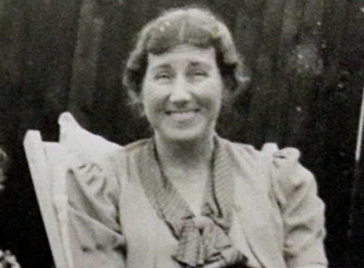
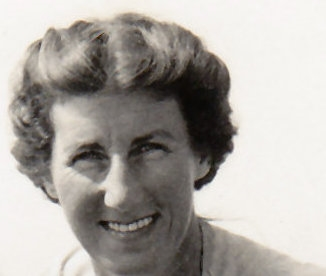

Joan Mary Cowell (née Bennett) 1906 - 2002
[ Home ] | [ Calendar ] | [ Surnames Index ] | [ Errors ] | [ Family History ]Joan Bennett, the wife of Ernest Frederick William Cowell (the fourth cousin once-removed on the mother's side of Nigel Horne), was born in Gravesend, Kent, England on 23 Nov 19061,2,3,4,5, was baptised in Milton, Gravesend, Kent, England on 20 Jan 1907 and married Ernest (an of electrical & mechanical at present engaged on production for air raid shelters manager with whom she had 3 children: Roger Housden, Clive D and Hilary M, along with 2 surviving children) at All Saints, Perry Street, Northfleet, Kent, England on 26 Aug 19336.
During her life, she was living at 114 Old Rd West in Gravesend on 2 Apr 19119 - less than a mile from her future husband Ernest Cowell who was living at 1 Campbell Road in Gravesend; at 26 Willersley Avenue, Chislehurst, Kent on 29 Sept 19391 and in 1945; and at 7 Shorland Court, Esplanade, Rochester, Kent in 19898.
She died on 24 Dec 2002 in Gravesend3 and was buried at St Marys Church, Fawkham, Kent after 24 Dec 20027.
Children
- Roger Housden was born on 3 Sept 1939
Citations
- 1939 Register - Findmypast (was the wife of the head of the household)
- England & Wales births 1837-2006 - Findmypast
- England & Wales deaths 1837-2007 - Findmypast
- Kent Baptisms - Findmypast
- Kent Marriages And Banns - Findmypast
- England & Wales marriages 1837-2008 - Findmypast
- Find A Grave http://www.findagrave.com
- From husband's probate register
- 1911 Census for England & Wales - Findmypast (was age 4 and the daughter of the head of the household)
Media
Ernest Cowell - Joan Bennett - gravestone

Joan Mary Bennett
Joan Bennett
Electoral Register - 1945

Joan Mary Bennett - 4

Joan Mary Bennett - 3

1939 Register Transcription - TNA-R39-1246-1246B-016-14
England & Wales marriages 1837-2008 - BMD/M/1933/3/AZ/000110/064
England & Wales deaths 1837-2007 - BMD/D/2002/12/84873697
England & Wales births 1837-2006 - BMD/B/1907/1/AZ/000047/191
1911 Census for England & Wales - GBC/1911/RG14/03830/0343/5
England & Wales births 1837-2006 - BMD/B/1902/3/AZ/000048/314
Kent marriages and banns - PRS/MEDWAY/MAR/0120658/2
Family Tree

Map
Generated by ged2site. Last updated on Jul 3, 2024
Known Issues
Baptism information not used to determine a parent
Residence record for 1945 contains no citation
No records of living with anyone
Adding date of burial as 'aft 24 Dec 2002'